Thiên nhiên vừa là đồng minh vừa là kẻ thù của chúng ta. Nó ban phát cho chúng ta các vật dụng và phương tiện để sinh tồn, đồng thời cũng cung cấp vô vàn thiên địch có thể giết chết chúng ta, hoặc làm cho chúng ta bị tổn thương, bệnh hoạn. Mà nơi hoang dã, nếu bị tổn thương hay bệnh hoạn thì thật là thê thảm. Nó làm cho các bạn suy kiệt tinh thần và ý chí phấn đấu, khi đó, khả năng tồn tại của các bạn thật là mong manh. Luật lệ của Thiên Nhiên rất khắc nghiệt, nếu không am hiểu, các bạn sẽ tự kết án tử hình.
Kẻ thù của các bạn trong thiên nhiên thường đến từ thực vật, động vật, khí độc, nước độc, thời tiết...
NGUY HIỂM TỪ THỰC VẬT
Trong lịch sử của loài người, đã ghi nhận rất nhiều vụ án do đầu độc, mà hầu hết, chất độc thường đến từ thực vật.
Những cây có chất độc thì rất nhiều, chúng tôi không thể nào liệt kê hết. Ở đây, chúng tôi chỉ đề cập tới những cây độc mà có dạng như cây ăn trái, ăn lá, rễ, củ... để ăn hay để nấu uống thay trà hoặc làm gia vị... mà các bạn có thể bị lầm. Hoặc những cây các bạn cần tránh xa như: Mắt mèo, cây Sơn... Còn các loại cây khác thì chắn chắn các bạn không dại dột gì mà ăn thử khi chưa biết rõ về nó.
Ngoài những cây duốc cá và nấm độc mà chúng tôi đã trình bày ở phần trước, còn có những cây độc sau đây:
Cây lá ngón:
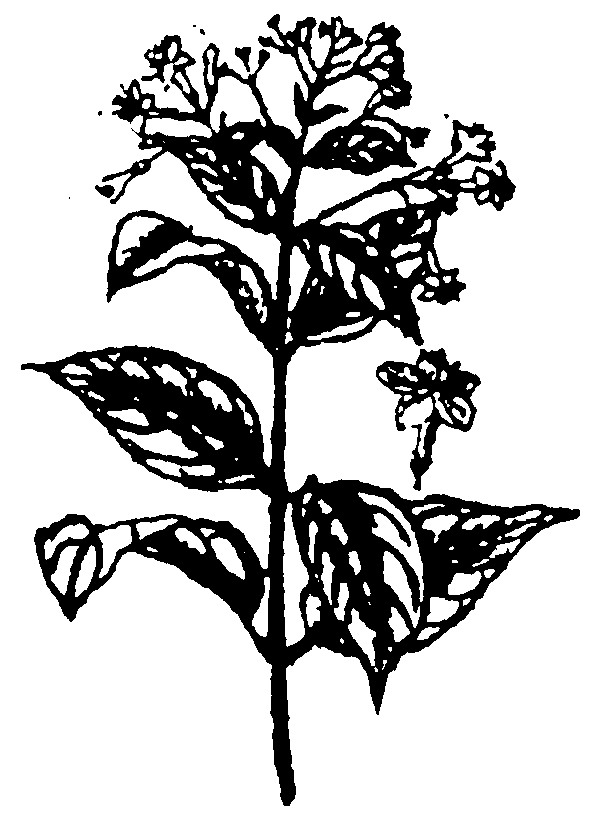
Còn gọi là thuốc rút ruột, hoàng đằng, đoạn trường thảo... Thuộc họ Mã tiền (Loganiaccae)
Được coi là cây độc nhất nước ta, người ta cho rằng chỉ cần ăn 3 lá là đủ chết người.
Là một loại cây mọc leo khá phổ biến ở miền rừng núi Việt Nam. Thân cây có khía. Lá mọc đối, hình trứng, đầu nhọn, mép nguyên, nhẵn bóng. Hoa mọc thành xim đầu cành hay kẽ lá. Cánh hoa màu vàng. Quả là một nang, hình thon, dài, màu nâu. (Xin đừng nhầm với cây hoa chè vằng, có hoa màu trắng. Quả hình cầu. Thuộc họ Nhài (Oleaceae)).
Hồi núi:
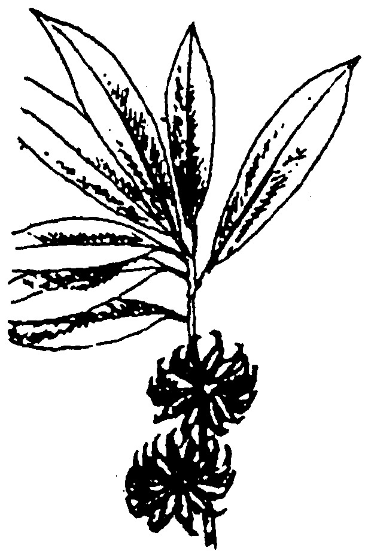
Còn gọi là đại hồi núi. Thuộc họ hồi (Illiciaceae)
Hồi núi là một cây cao 8-15 m. Mọc hoang khắp vùng rừng núi ở trong nước. (Rất giống cây đại hồi mà chúng ta thường dùng để làm gia vị, cho nên phải lưu ý để tránh nhầm lẫn, vì cây hồi núi có độc). Hồi núi có hoa màu hồng rất đẹp. Quả hình na, hoa, đầu có mỏ hẹp, dài, và cong lên như hình lưỡi liềm. Lá và quả có tinh dầu, mùi vừa giống đại hồi, vừa giống tiêu.
Tỏi độc:
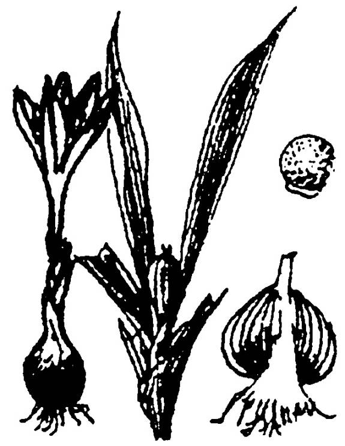
Thuộc họ hành tỏi (Liliaceae). Là một cây mọc hoang trong những vùng ôn đới lạnh, tuy ở Việt Nam không có, nhưng chúng tôi cũng đưa ra để cho các bạn tham khảo.
Tỏi độc là một loại cỏ sống lâu năm, có một dò (củ) to mẫm. Từ dò mọc lên cán với 3-4 hoa loe thành hình chuông, màu tím hồng nhạt rất đẹp, Quả là một nang to 3 ngăn, trong chứa nhiều hạt. Lá to dài, đầu lá hẹp, rụi tàn vào mùa nắng, không có dấu vết gì của cây nữa cho đến mùa thu tới, lại thấy hoa từ dưới đất xuất hiện.
Toàn bộ cây đều có độc, người và gia súc ăn phải sẽ chết.
Trẩu:
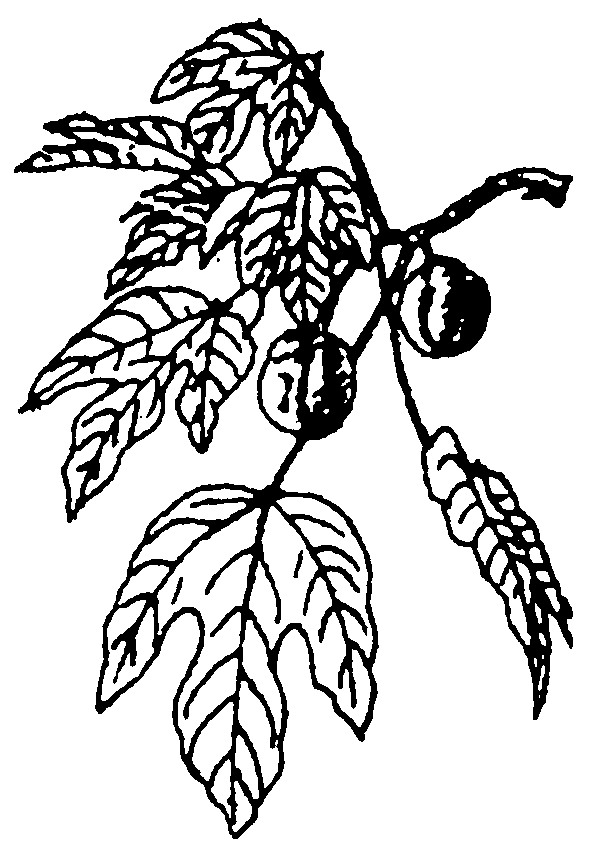
Còn gọi là cây Dầu Sơn, Ngô đồng, Thiên niên đồng, Mộc du thụ. Thuộc họ thầu dầu (Euphorbiaccae)
Trẩu là một cây to, cao từ 8m trở lên,, thân nhẳng. Cây mọc hoang và cũng được trồng khắp nơi trong nước. Lá đa dạng nhưng có đặc điểm chung: ở gốc phiến lá và kẽ thùy bao giờ cũng có 2 tuyến đỏ nổi rõ. Hoa màu trắng, đốm tía. Quả hình trứng màu lục, cấu tạo bởi 3 mảnh vỏ. Lá và hạt đều có saponozit độc
Hoàng nàn:
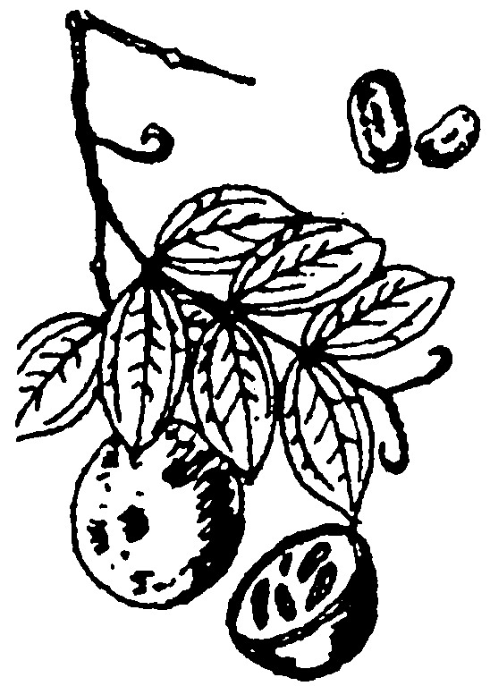
Còn gọi là Vỏ Dãn. Thuộc họ Mã Tiền (Loganiaccae)
Là một dây leo mọc hoang ở các vùng rừng núi miền Bắc nước ta. Cành gầy, nhẵn, có những móc mọc đối ở cành non. Thân có vỏ xám với những đám màu vàng đỏ. Lá mọc đối, hơi bầu dục. Quả hình cầu, vỏ ngoài cứng, trong chứa nhiều hạt hình khuy áo, rất giống hạt mã tiền. Vỏ và hạt hoàng nan rất độc.
Mã tiền:
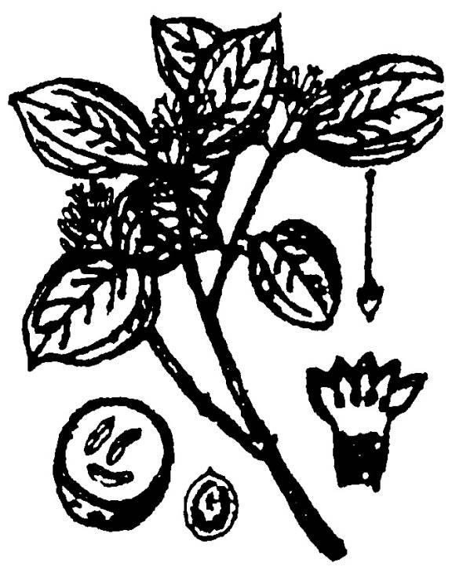
Còn gọi là Củ chi. Thuộc họ Mã tiền (Loganiacae)
Mọc hoang rất nhiều ở miền Nam nước ta. Là một cây nhỏ, vỏ xám, cây non có gai. Lá mọc đối, phiến lá hình bầu dục. Hoa nhỏ, màu hồng, họp thành xim thành tán. Quả mọng hình cầu, to bằng quả cam, có chứa cơm màu trắng và nhiều hạt hình khuy áo.
Một số mã tiền được khai thác ở miền Bắc nước ta là dây leo, có đường kính thân 10-15 cm, chiều dài có thể 30-40 mét. Mã tiền rất độc khi dùng với liều cao, rất dễ tử vong khi ngộ độc.
Cây Sừng dê:
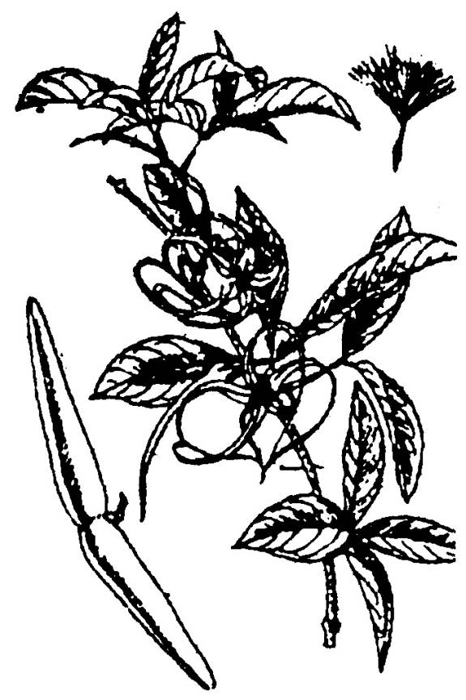
Còn gọi là Cồng cộng, Sừng Bò... Thuộc họ Trúc Đào (Apocynaccae).
Là một cây nhỏ, cao từ 3-5 mét.Cây mọc hoang rất phổ biến ở Việt Nam. Toàn thân và lá khi bẻ có mủ màu trắng sữa. Lá mọc đối, hơi giống hình thìa, tràng hoa hình phễu rộng, xẻ 5 cánh màu vàng, đầu cánh hẹp lại thành hình sợi. Quả khô gồm 2 đại dính vào nhau chứa nhiều hạt có cuống và chùm lông mịn dài.
Toàn thân cây sừng dê đều có chất độc, nhất là hạt. Người ta còn dùng cây sừng dê để chế thuốc tẩm độc tên dùng trong săn bắn.
Cây Thông Thiên:
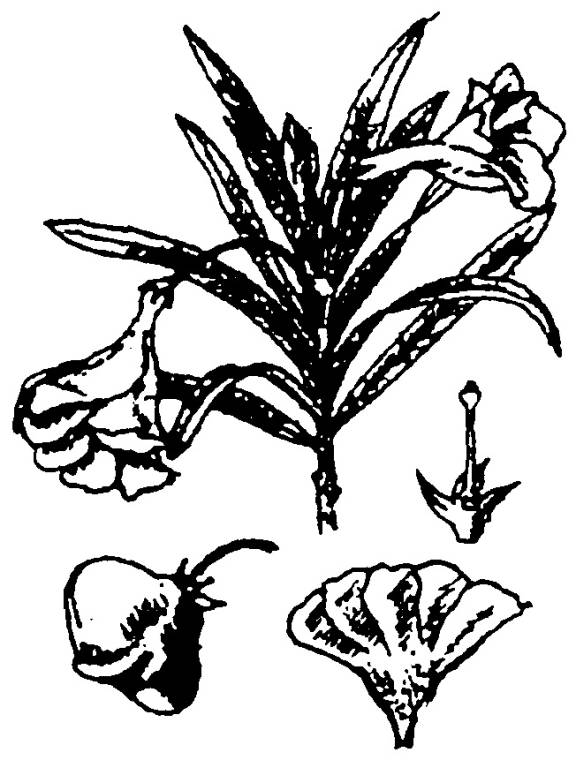
Còn gọi là Hoàng giáp trúc đào. Thuộc họ Trúc Đào (Apocynaccae)
Cây được trồng làm cảnh và mọc hoang (do trồng rồi bỏ) tại nhiều nơi ở các tỉnh Việt Nam do có hoa màu vàng rất đẹp.
Toàn thân cây thông thiên rất độc, nhất là hạt, người ta ghiền nát hạt để làm thuốc trừ sâu bọ.
Hành biển:
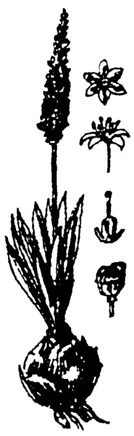
Scilla Maritima. Thuộc họ Hành Tỏi (Liliaccea).
Hành biển là cây mọc hoang tại những bãi cát quanh vùng biển Địa Trung Hải và những nước ở Bắc Phi... Việt Nam đã di thực và trồng một số nơi trong nước. Cây có một dò rất lớn, có thể nặng từ 3-8 kg. Vào mùa Xuân có lá hình mác, cuối mùa Hạ, lá khô và xuất hiện cán hoa dài mang nhiều hoa nhỏ màu trắng hay xanh lục.
Hành biển rất độc, người ta dùng nước sắc để diệt chuột và sâu bọ.
Cà độc dược:
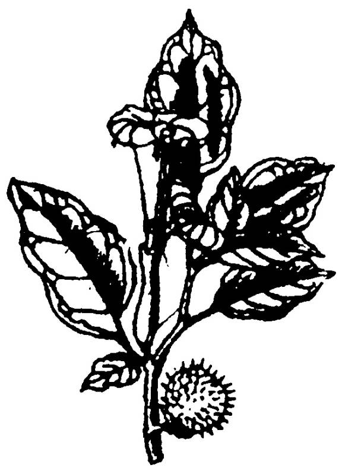
Còn gọi là Cà duợc, Mạn đà la (Thuộc họ Cà (Solannaceae)
Nước ta có 3 dạng cà độc dược
1- Hoa trắng, thân xanh, cành xanh
2- Hoa đốm tím, cành và thân tím
3 - Lai hai dạng trên.
Các dạng cây trên đều là những cây nhỏ, mọc hằng năm, cao từ 1-2 mét. Mọc hoang và được trồng làm cảnh khắp nơi trong nước.
Cà độc dược thuộc loại thuốc độc bảng A, nhưng nếu dùng với liều khống chế, có thể chữa ho hen, say sóng, đắp ngoài mụt nhọt...
Cây mù mắt:
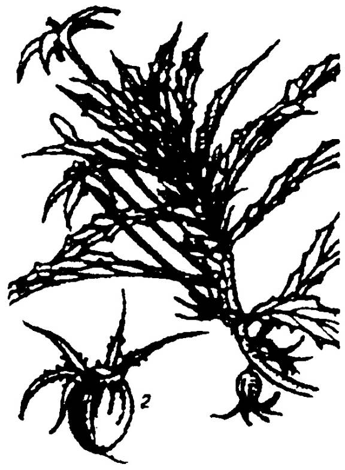
Là một cây thuộc loại thân thảo, cao khoảng 0,5 m. Thuộc họ Lộ Biển (Lobeliaceae)
Mọc hoang và được trồng nhiều ở miền Bắc nước ta. Lá hình mác nhọn, mép có răng cưa. Hoa mọc ở kẽ lá, 4 lá dài, 5 cánh hoa màu trắng. Quả nang, có hai ô đựng nhiều hạt nhỏ.
Toàn thân cây có nhựa mủ độc, vào mắt có thể làm mù mắt, nếu nếm vào có cảm giác nóng bỏng.
Cây Ô dầu:
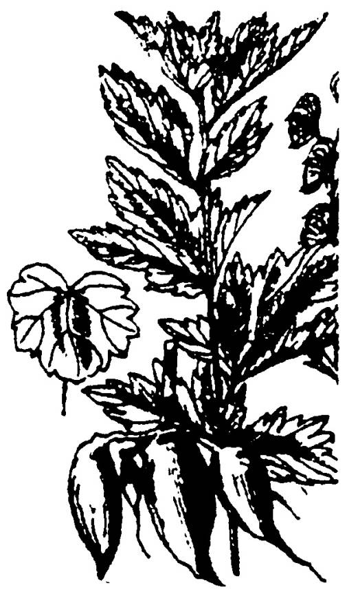
Còn gọi là Củ Gấu Tàu; Củ Ấu Tàu. Thuộc họ Mao Lương (Ranunculaccae)
Cây mọc hoang ở các vùng núi cao biên giới miền Bắc nước ta. Là một loại cây thân thảo. Cao 0,6-1 mét. Thân mọc thẳng đứng, có lông. Lá hình mắt chim, chia thành ba thùy, có răng cưa ở nữa trên. Hoa lớn màu xanh tím, mọc thành chùm dài 5-15 cm. Quả có 5 đại, mỏng như giấy, hạt có vẩy ở trên mặt.
Người ta thường thái mỏng, ngâm rượu dùng xoa bóp đau nhức, sai khớp, dập gãy chân tay. Người ta còn dùng tẩm độc đầu các mũi tên để săn bắn.
NHỮNG CÂY ĐỘC KHÁC
Còn vô số cây cỏ có mang độc chất, mà khi dùng làm thực phẩm, thì các bạn có thể vong mạng, nhưng chúng tôi không thể kể hết vì không có tiêu bản, cũng như không đủ khả năng. Cho nên các bạn cần phải thật thận trọng khi dùng cây cỏ làm thực phẩm. Tuy nhiên, có nhiều cây không cần ăn mà chỉ cần va chạm, hay bị dính mủ, thì các bạn cũng bị tổn thương, tiêu biểu cho những loại đó là:
Cây mắt mèo:
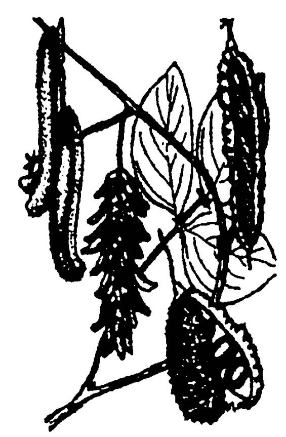
tên khoa học Mucuna Pruriens Papilionaecca. Thuộc họ Đậu (Fabaceac)
Là một loại dây leo hằng niên, mọc ở đất hoang, rừng chồi, trảng cỏ, rừng thưa, rừng tái sinh... ít khi mọc ở rừng rậm... Thân, lá, trái đều có lông tơ. Hoa màu tím thẫm, chùm thòng. Trái hơi cong, khi già có màu nâu đen phủ đầy lông vàng, loại lông này rất ngứa. Khi các bạn vô tình chạm phải hay do gió thổi bay đến, thì ngứa ngáy khó chịu vô cùng, càng gãi càng ngứa. Nếu vào mắt thì có thể bị mù tạm thời.
Nếu bị dính lông mắt mèo, thì các bạn đừng gãi mà hãy áp dụng một trong những phương pháp sau:
- Dùng rơm, cỏ khô, giấy... đốt thành ngọn lửa rồi hơ phớt mặt da cho lông mắt mèo bị cháy đi thì đỡ ngứa.
- Nắm cơm thành vắt (cơm nếp càng tốt) lăn trên chỗ ngứa cho lông mắt mèo dính theo.
- Dùng băng keo to bản dán áp vào nơi ngứa rồi lột ra, lông mắt mèo sẽ dính theo băng keo.
Cây sơn:
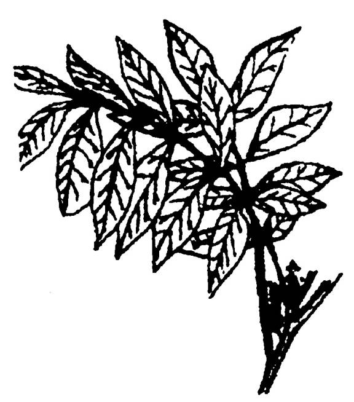
Mọc hoang khắng rừng núi và đồng bằng nước ta. Là một loại cây nhỏ, cao từ 2-5 m. khi lá còn non màu tím thẫm. Thân màu xám. Trái hình cầu, màu xám. Những người dị ứng với cây sơn sẽ bị phù mặt và cơ thể khi chạm phải
Cây hồng thự:
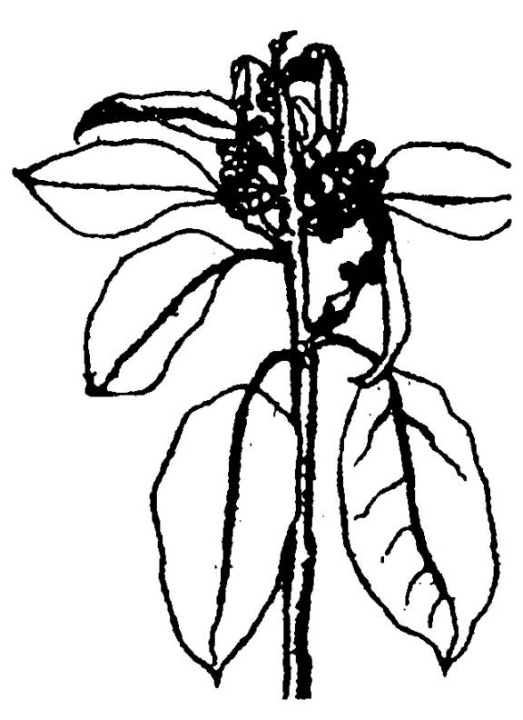
Mọc hoang ở các những cùng đầm lầy, các vùng cửa sông ngập mặn, ven bờ biển. Thân cây bao phù một lớp phấn trắng, lá dày, cứng. Quả hình cầu, kết thành chùm, hay đơn lẻ. Cây hồng thự có nhựa rất độc, dính vào da sẽ bị phồng dộp, văng vào mắt có thể bị mù.
NGUY HIỂM TỪ ĐỘNG VẬT
Khác với thực vật có rất nhiều cây trái mang theo vô số chất độc trong mình. Ít động vật có chất độc khi làm thực phẩm, trừ một vài loại mà chúng ta dễ dàng nhận dạng. Nhưng chúng lại thường chủ động gây hại cho chúng ta, từ loài mãnh thú to lớn tấn công gây thương vong đến các loài có nọc độc gây đau đớn chết chóc hoặc các côn trùng mang theo những mầm bệnh nguy hiểm khôn lường. Vì thế chúng ta cần phải biết một số biện pháp đề phòng cũng như đối phó với chúng.
CÁC LOÀI MÃNH THÚ
Ngày nay, nhiều loài mãnh thú đã gần như tuyệt chủng trên hành tinh của chúng ta, nếu còn thì số lượng không đáng kể, tuy nhiên thỉnh thoảng qua các thông tin, chúng ta vẫn còn nghe một số người bị mãnh thú tấn công và thường là tử vong hoặc mang thương tích trầm trọng... Nhưng thường thì chúng không chủ động tấn công chúng ta, trừ trường hợp đang giữ con hoặc bị khiêu khích phải tự vệ, hay quá đói.
Khi bắt buộc phải đối diện với mãnh thú, điều cốt yếu là bạn đừng bao giờ bỏ chạy, vì tốc độ của bạn khó lòng mà thắng được các loại thú rừng, cho dù đó chỉ là con sói con tầm thường... và khi bỏ chạy, chính các bạn đã kích thích tập tính săn bắt hung hãn của các loài thú. Hãy bình tĩnh đối diện với chúng trong tư thế sẵn sàng chiến đấu và nhìn trừng trừng vào chúng bằng một cặp mắt rực lửa cho đến lúc chúng bỏ đi
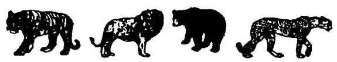
Nếu bị tấn công, cho dù đó là cọp, beo, sư tử, gấu, heo rừng, chó sói... thì con đường sống sót duy nhất của các bạn là chiến đấu và phải chủ động tấn công quyết liệt, dùng bất kỳ vật gì có thể làm vũ khí (cành cây, cục đá...) và cả nắm đấm của các bạn, nhắm thẳng vào tim và yết hầu, nhưng hãy lưu ý là loại vũ khí này, nếu chỉ làm chúng bị thương thì chúng sẽ trở nên hung hãn hơn. Khi chiến đấu quyết liệt, có thể các bạn sẽ bị một số thương tích, nhưng cũng còn hơn là là phải chết.
Đề phòng thú dữ tấn công:
Ở những nơi hoang dã, thú rừng thường bị hấp dẫn bởi mùi thức ăn của chúng ta nấu nướng (ở Châu Mỹ, gấu và một số lớn loài thú được bảo vệ nên chúng rất đông đúc và thường lùng sục thức ăn của những người đi cắm trại và đôi khi tấn công họ). Cho nên các bạn không nên nấu nướng, ăn uống gần lều và trên gió. Thực phẩm tồn trữ và dụng cụ nấu nướng, chén dĩa, áo quần dính thức ăn (nhất là cá)... phải được treo cao ở xa lều, dưới gió. Nếu cơ thể của bạn dính mùi cá, thì nên tắm rửa thật sạch. Ban đêm, các bạn nên đốt một đống lửa gần nơi bạn ngủ và giữ cho lửa cháy thành ngọn liên tục.
Khi cần di chuyển, các bạn nên mang theo lao hay gậy nhọn làm vũ khí, một tay cầm một cây roi mảnh quất vút vút trong không khí để gây ra những tiếng rít xé gió làm cho thú hoảng sợ. Cẩn thận khi di chuyển ở rừng thưa, trảng cỏ, bìa rừng, đường mòn, dọc theo sông suối, nơi lấy nước...
LOÀI BÒ SÁT
Rắn và Đẻn:
Loài bò sát này rất nguy hiểm, vì chúng hiện diện khắp nơi và khó nhận thấy. Chúng lại có nọc độc rất dễ sợ, có thể gây chết người trong một thời gian ngắn. Ngày nay, rắn là một nguy cơ rất lớn cho những người sinh sống trong vùng hoang dã.
Thật ra trong gần 2.400 loại rắn có mặt trên trái đất, chỉ có 1/6 loài là có nọc độc, và cũng chỉ có một ít trong số đó là có nọc đủ mạnh để gây chết người. Tiêu biểu cho loại này có: hổ mang, rung chuông, chàm quạp, rắn lục...
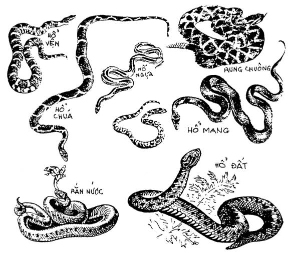
Đẻn là một loài thuộc họ Rắn biển (Hydrophidae). Thân mình rất giống rắn nhưng khác là phần đuôi dẹp dần về phía sau như một mái chèo. Trong 15 loài đẻn có mặt tại vùng biển Việt Nam thì hầu hết đều có nọc độc, trong đó có một số loài được coi là cực độc so với rắn trên cạn, nhưng đẻn chỉ cắn người khi cần phải tự vệ... Những loài đẻn chúng ta thường gặp là: đẻn cơm, đẻn mỏ, đẻn vết...
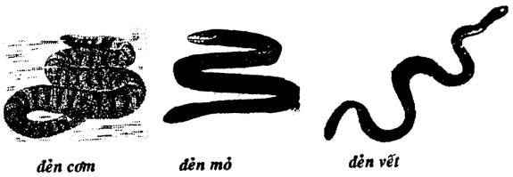
Do tác hại khác nhau của nọc độc từng loại rắn, cho nên khi một người bị rắn cắn, các bạn hãy cố gắng xác định đó là loài rắn gì? Độc hay không độc? Nếu là rắn độc thì nó thuộc loại nào?
DỰA VÀO VẾT CẮN
Rắn độc: rắn độc thường để lại hai vết răng nanh sâu, ít chảy máu nhưng rất đau nhức và sưng tấy, nọc càng ngấm thì càng đau và sưng nhiều, chỗ hai vết nanh bầm tím.
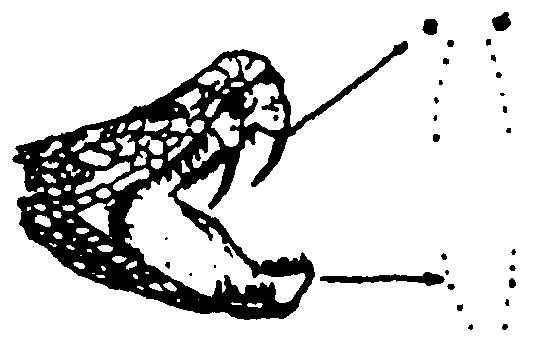
Rắn không độc: Vết cắn của rắn không độc thì để lại đầu của hai hàm răng, nhưng không thấy dấu của răng nanh, vết cắn chảy máu.
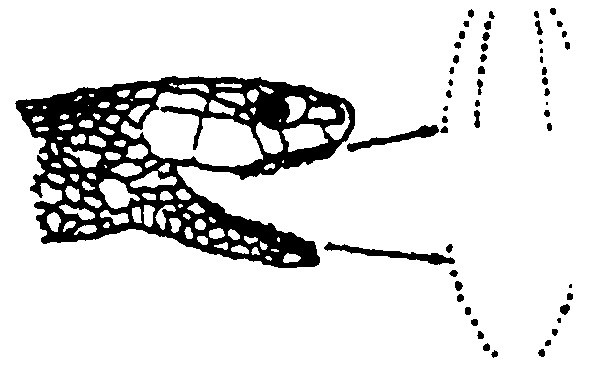
Một loại rắn độc đều có một cấu trúc răng và móc độc khác nhau, cho nên vết cắn để lại trên mình nạn nhân cũng khác nhau, nếu có kinh nghiệm, dựa vào dấu răng, người ta có thể chẩn đoán loại rắn đã cắn.
DỰA VÀO ĐỊA THẾ
Theo tập tính và nơi ở của rắn, chúng ta thường gặp
Rắn hổ nơi đồi núi, gò đống, bụi rậm, nơi cao ráo... Khi cắn, thường ngóc cao, bành cổ, thở phì phì.
Rắn mai gầm thường sống nơi ẩm ướt, ban đêm thường kiếm ăn theo bờ ruộng ẩm.
Rắn lục xanh thường sống nơi bờ cỏ, bụi cây.
Rắn chàm quạp thường sống ở các vùng đất đỏ, đồn điền cao su, rừng cát ven biển... hay nằm bên lề đường, ban đêm khi gặp người đi ngang thì phóng tới cắn và ngậm rất chặt, phải đá mạnh chân mới văng ra, cắn xong răng còn dính lại. Ban ngày, chàm quạp chỉ cắn khi cần tự vệ, cắn xong là bỏ chạy ngay nên không để lại răng.
DỰA VÀO TRIỆU CHỨNG CỦA NẠN NHÂN
Thành phần hóa học của mỗi loại nọc rắn khác nhau, do đó tác động sinh học trên cơ thể nạn nhân cũng khác nhgau.
Người ta thường phân biệt nọc rắn thành hai nhóm chính
1-Nhóm độc tố máu (hermorragin): Tác động chủ yếu liên hệ tim mạch, gây phân giải hồng cầu, đông máu và chảy máu, làm co huyết quản, gây trụy tim... Gồm nọc của các loài thuộc họ Rắn lục (viperideae). Rắn rung chuông (crotalidac)
2- Nhóm độc tố thần kinh (neurotoxin): Tác động chủ yếu liên hệ thần kinh, hô hấp. Gây liệt tay, liệt cơ hoành, cuối cùng ngạt thở và chết... Gồm các loại Rắn biển (hydrophydac) Rắn hổ (elapidac)
TRIỆU CHỨNG LÂM SÀNG GIỮA HAI NHÓM ĐỘC TỐ
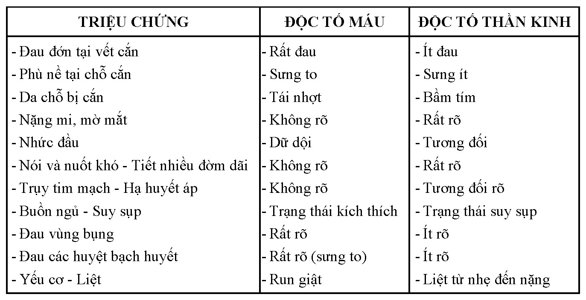
CẤP CỨU
Khi bị rắn độc cắn, hãy bình tĩnh, càng ít cử động chổ bị rắn cắn càng tốt. Nếu bị cắn ở chân thì không nên đi lại, ngay cả một bước (nếu điều đó có thể được). Cấp cứu nạn nhân theo trình tự sau:
1- Đặt đai chỉ huyết (garrot) cách vết cắn 5-10 cm về phía tim. (Để cho máu lưu thông nuôi phần dưới) rồi cột lại.
2- Tẩy nọc tại chỗ bằng nước xà phòng, nước vôi, nước phèn, nước có chất chua, chất chát, thuốc tím...
3- Dùng dao nhọn, bén sạch, rạch rộng chỗ 2 vết nanh thành 2 hình chữ thập. Hút máu độc ra ngoài bằng cách nặn tay, dùng ống giác hơi, ống giác cao su, ống tiêm 10cc hoặc dùng miệng (nếu miệng không có vết trầy xướt, sâu răng... )
Lưu ý: Nếu vết cắn đã trên 30 phút thì không cần hút, vì không ích lợi gì mà đôi khi còn có hại thêm
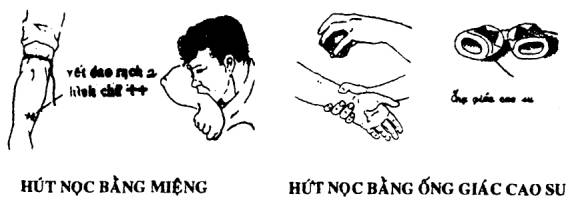
Các bạn có thể dùng “cục hút nọc” bào chế từ một miếng sừng hươu nai hầm lâu trong nồi kín, đặt tại vết cắn để trung hòa lượng nọc.
Tác dụng của nọc rắn nhanh chóng và chỉ xảy ra trong môi trường trung tính hay axit, vô hiệu lực trong môi trường kềm. Do đó các chất sau đây có tác dụng làm hư hủy nọc rắn: Cloramin T, thuốc tím, tanin, saponin, papain (trong mủ đu đủ), bromelin (trong quả dứa) than hoạt tính, dịch tụy tang, nước vôi, nước javel...
ĐIỀU TRỊ
Tiêm huyết thanh kháng nọc (nếu có)
Cho nạn nhân uống rượu hội và viên hội. Rượu hội thì cứ 10-30 phút uống một chung. Viên hội thì viên đầu cho nạn nhân nhai ra xác đắp vào vết cắn và ngày uống 2 lần, mỗi lần 3 viên, liên tiếp trong 3 ngày.
Vì rượu hội là một bài thuốc rất hiệu nghiệm, chữa được hầu hết các loại nọc rắn, các bạn nên chuẩn bị sẵn trước khi đi thám hiểm hay vào những nơi hoang dã
Bài thuốc gồm:
- Ngũ linh chi 20 gr
- Xuyên bối mẫu 24gr
- Sinh Nam Tinh 24gr
- Bạch chỉ 24 gr
- Quế 24 gr
- Bạch thược 12 gr
- Bạch đậu khấu 24 gr
- Hà thủ ô đỏ 40 gr
- Thanh Phàn 24gr
- Bào sơn Giáp 24 gr
- Hùng Hoàng 40 gr.
Tất cả các vị thuốc trên, tán nhỏ, ngâm với 1,5 lít rượu 35 độ, trong 10 ngày thì dùng được. Nếu cần gấp thì chưng cách thủy trong 4 giờ.
Đắp thuốc tại chỗ:
Dùng các cây cỏ có tanin như: Ổi, Sim, Mua, Lựu, Sung, Trà (chè)
Làm ấm cơ thể:
Bằng các loại cây như: Quế, Gừng, Tía tô, Tỏi, Đại hồi, Đinh Hương, É Tía, Lá Lột, Kinh Giới, Trà Đậm.
Chống co thắt phế quản:
Dùng các cây như; Cà độc dược, Bối mẫu, Bán hạ, Nam Mộc Hương.
Chống đau nhức:
Đắp lại tại chỗ những vị thuốc tươi có chất nhầy như; Bông Bụp; Muồng trâu, Mồng tơi, Bồ ngót, Rau Lang, Nhớt họng gà...
Chống viêm nhiễm về sau;
Lá Móng tay, Phèn đen, Vú bò, Xuyên tâm liên, Cam thảo nam, cỏ Lưỡi rắn, Mần trầu, Nghệ, Vòi voi, Sài đất, Đọt sậy.
Khai thông đường dẫn thoát (gan, mật, ruột)
Hà thủ ô, Muồng trâu, Đại hoàng, Nghề răm, rau Má, rau Sam, cỏ Tranh, Dứa dại, Bìm bìm, Rau Đắng
CÁC BÀI THUỐC TRỊ RẮN CẮN
Bài thuốc số 1
- 20 gr bù ngót (hoặc rau răm hay cây Kim vàng)
- 5 gr Phèn chu
Tất cả bỏ chung giã nhuyễn, vắt nước uống, xác đắp lên vết cắt.
Bài thuốc số 2:
- 6-7 lá trầu
- 1 quả cau
- 1 chút vôi ăn trầu
- 1 miếng Quế bằng nửa ngón tay út giã nhuyễn
Tất cả trộn chung cho véo miệng nhai, nuốt lấy nước cốt. Hoặc giã ra vắt lấy nước uống.
(Trích trong Dược Lý Trị Liệu của GS Bùi Chí Hiếu)
Bài thuốc số 3:
Đào lấy một nắm cỏ cú (cỏ gấu) giã lấy nước hòa với nước trà chanh cho uống. Rất hiệu nghiệm (đây là một trong những bài thuốc) quý trong dân gian)
Bài thuốc số 4:
- Hạt hồng bì sấy khô 100gr
- Hạt hoặc lá vông vang sấy khô 100gr
- Hoa hoặc lá bông báo sấy khô 100 gr
Các thứ trên tán thật nhỏ, đóng gói nylon, cứ 25gr một gói, bảo quản nơi khô ráo. Khi dùng thì hoà với 100 ml cồn 75 độ hay rượu 45 độ lắc cho tan thuốc. Dùng bông chấm thuốc bôi đón chận quằng đỏ (do chạy nọc) từ phía trên bôi dồn xoáy trôn ốc đến vết cắn. (không bôi lên vết cắn), cách 10-15 phút bôi một lần. Khi quằng đỏ giảm thì 2-3 giờ bôi một lần.
Đây là bài thuốc gia truyền của dân tộc Mường. Đã từng ứng dụng nhiều nơi, kể cả trong quân đội, đều có kết quả rất tốt
Bài thuốc số 5:
- Hạt đậu nọc (còn gọi là đậu độc, đậu rừng). Mọc hoang ở trong rừng. Tên khoa học chưa được xác định rõ. Thuộc loài Mucuna, họ Đậu (Fabaceae).
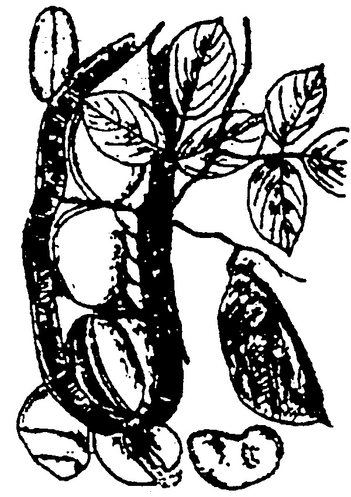
Là một loại dây leo thân gỗ, lá giống như lá sắn dây. Hoa mọc chùm màu tím đen. Trái giống bao đựng kiếng đeo mắt, màu đen, có lông phủ, chứa khoảng 4 hạt to gần bằng hạt mít. Vỏ hạt cứng, bóng có vân loang lổ trông rất đẹp, có một đường sống màu nâu chạy dài trên một nửa mép hạt
Cách dùng: Khi bị rắn độc cắn, dùng hạt bổ đôi dọc theo đường sống giữa (sau khi đã nặn máu, sát trùng. Lấy nửa hạt đắp mặt trong vào vết cắn băng lại, nếu hết nọc hạt tự bong ra. Sau 10-12 giờ mà vẫn còn sưng thì thay tiếp nửa hạt đậu khác.
CHÚ Ý: Hạt có chất độc, không được uống.
THÍCH HUYỆT:
Trường hợp rắn độc cắn vào bàn tay. Làm cho bàn tay và bàn chân sưng phù, càng to... Hãy dùng kim lớn (kim tam lăng hay kim tiêm lớn bằng thép không rỉ) thích cho dịch độc tiết nhanh ra ngoài, tránh gây hoại tử.
- Bàn tay sưng phù thì thích vào huyệt Bát tà (bên tay sưng)
- Bàn chân sưng phù thì thích vào huyệt Bát Phong (bên sưng)
Vị trí huyệt Bát tà: Ở các khe ngón tay trên chỗ thịt trắng đỏ giao nhau, mỗi tay có 4 huyệt.
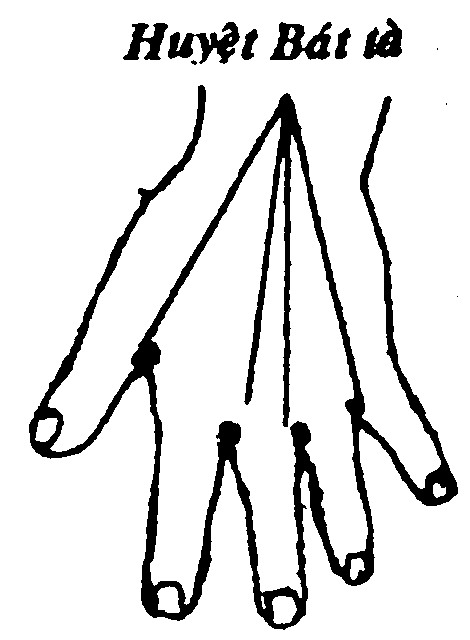
Vị trí huyệt Bát Phong: Ở các khe ngón chân bờ trên chỗ thịt trắng đỏ giao nhau, mỗi chân có 4 huyệt.
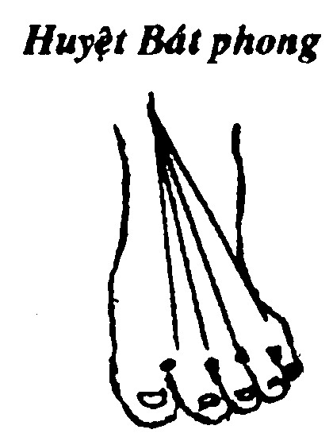
Phương pháp thích: Sát trùng kim thích và vùng huyệt. Bàn tay hay bàn chân bên sưng để xuôi. Tay phải cầm kim thích nhanh vào các huyệt định châm, mũi kim hướng lên mu bàn tay hay bàn chân. Tùy theo sưng to hay nhỏ để quyết định thích sâu hay cạn (từ 5-15 mm). Làm cho dịch độc (có thể lẫn cả máu) chảy xuống là được. Sau khi thích xong, dùng tay nhẹ nhàng ép cho dịch chảy xuống. Nếu sau đó, dịch độc tăng làm sưng trở lại thì tiếp tục thích như trên. Một ngày có thể thích 2-3 lần. Sau 1-2 ngày sẽ bớt sưng.
Khi thích huyệt, đồng thời nên cho uống các bài thuốc giải nọc.
CÁC MÔN THUỐC NGOẠI KHOA
° Nếu giết được con rắn, sau khi đã thực hiện các biện pháp cấp cứu, mổ ruột con rắn lấy gan và mật đắp lên vết cắn, sẽ nhanh chóng giảm đau
° Bắt 7-9 con rệp nuốt sống với nước sôi để nguội, sau 10 phút sẽ giảm đau nhức. Những người đi rừng thường bắt rệp bỏ vào chai nhỏ mang sẵn theo trong mình, nếu bị rắn cắn thì lấy ra uống đồng thời bóp nát vài con rệp bôi vào vết cắn để cấp cứu.
° Dùng dịch âm đạo của phụ nữ bôi lên (Có thể các bạn sẽ cười nhạo hai cách trên đây, nhưng tác giả đã thấy tận mắt trên 3 người được cứu bằng những phương pháp này)
° Tìm một trong những cây sau đây, nhai hay giả với muối, vắt lấy nước uống, bã đắp lên vết cắn: Bồ cu vẽ, Bảy lá một hoa, Chua ngút, rễ và lá Đu đủ, Răm nghề, Cát đằng, ban nhật, Ớt...
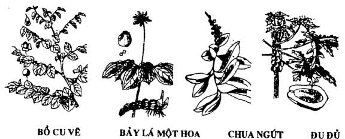
ĐỀ PHÒNG RẮN CẮN
Thông thường thì rắn không chủ động tấn công người, trừ trường hợp phải tự vệ. Rắn hay ẩn núp trong các lùm cây, bụi cỏ, đống lá ủ, trên các cành cây, ven bờ nước... Khi di chuyển trong các khu vực nghi ngờ có rắn, các bạn nên:
- Cẩn thận xem chỗ mà mình sắp đặt chân xuống
- Dùng cành cây khua khắng vào bụi rặm trước khi thọc tay chân vào để lấy vật gì hay hái trái cây.
- Mang giày ống hoặc mặc quần áo rộng, dài, dày...
- Cẩn thận trước khi mang giày hay mặc quần áo, vì rắn có thể ẩn núp trong đó.
- Tìm hiểu các tập tính và biết các phân biệt các loại rắn, nhất là rắn độc.
- Biết các sơ cứu và điều trị khi bị rắn cắn.
GHI CHÚ:
Sở dĩ chúng tôi đề cập khá nhiều về mục RẮN CẮN là do ở nơi hoang dã, các bạn dễ bị rắn cắn hơn là bị các loài thú khác tấn công. Khi bị rắn cắn, các bạn cũng rất dễ bị tử vong nếu không biết cách cấp cứu và điều trị. Hiện nay trên thế giới, số người bị rắn cắn hàng năm lên đến hàng chục, thậm chí hàng trăm ngàn người và tỷ lệ tử vong cũng rất cao, trong khi số người bị mãnh thú tấn công không có là bao.
° Lưu ý: Đa số những người bị rắn không độc cắn đã được “điều trị thành công” bằng các dược thảo gia truyền, do đó có sự ngộ nhận về hiệu lực của thuốc, các bạn nên cẩn thận.
CÁ SẤU VÀ THẰN LẰN HẠT (Gila monster)
Trong lớp bò sát, còn có hai loài có thể gây nguy hiểm cho chúng ta là cá sấu và thằn lằn hạt
Cá Sấu:
Các loài cá sấu (lớn hay nhỏ) thường sinh sống trong những vùng hoang vu trên thế giới, trong các đầm lầy, các dòng sông... và có một loài sấu rất lớn sống ven bờ biển, hoang đảo. Cá sấu ít khi chủ động tấn công người ở trên cạn, trừ khi bị khiêu khích, nhưng nếu các bạn đang vùng vẫy dưới nước là một chuyện khác, nó sẽ trở thành hung thần.
Bộ cá sấu (Crocodilians): có 3 họ
1- Họ cá sấu chính thức (Crocodililidae): có 3 giống là Crocrodylus, Osteolemus và Tomistoma.
2- Họ mãnh ngạc (Alligatorlidae): gồm 4 giống: Alligator, Caiman, Melanosuchus và Paleososchus)
3- Họ cá sấu mõm dài (Gavialidae); chỉ có một loài duy nhất sống ở Ấn độ gọi là cá sấu sông Hằng (Gavialis gangeticus)
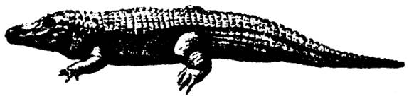
Ở Việt Nam các bạn thường gặp 2 loại cá sấu là:
1- Cá sấu xiêm (Crocodylus siamensi). Là loài sấu nhỏ, dài khoảng 3m, thân màu xám, đầu ngắn và rộng, sống ở nước ngọt.
2- Cá sấu hoa cà (Crocodylus porosus). Loài cá sấu có thể dài hơn 8m, thân màu vàng có xen lẫn vảy đen, đầu dài và thuôn, sống ở vùng nước mặn, ven biển.
Ngoài ra, chúng ta còn nhập khẩu của Cuba loài sấu bàn cờ (Crocodylus rhombifer) để nuôi.
Thằn lằn hạt:
chỉ thấy ở vùng Nam Mỹ, Trung Mỹ và Mexico. Loài thằn lằn có nọc độc này khi cắn cũng gây chết người như các loài rắn độc. Xử lý cũng như khi bị rắn độc cắn
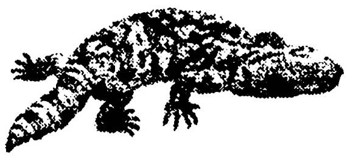
LƯU Ý: Các loài bò sát (kể cả những loài có nọc độc) đều ăn được và rất ngon. Tuy nhiên khi làm các bạn cũng nên cẩn thận khi làm thịt. Nên chặt bỏ đầu và lòng ruột, chôn sâu xuống đất để phòng dẫm phải.
NGUY HIỂM Ở DƯỚI NƯỚC
Ở dưới nước, ngoài các loại đẻn và một số rắn độc như đã trình bày trên, các bạn còn có thể gặp một số nguy hiểm khác như bị cá sấu, cá mập, cá piranha... tấn công, bị chạm vào xúc tu của các loài sứa làm bỏng rát, liệt cơ... bắt nhầm cá chình hay cá đuối điện bị điện giật, ăn trúng cá nóc hay ốc độc có thể vong mạng... Chúng ta thử điểm qua một số loài có thể gây nguy hiểm cho chúng ta.
CÁ MẬP:
Có tới 354 loài cá mập, nhưng trong đó chỉ có chừng 30 loài là thực sự nguy hiểm đối với con người, đứng đầu danh sách này là cá mập trắng, cá mập xanh, cá mập hô, cá mập đầu búa...
Riêng ở Việt Nam chúng ta có thể gặp một số cá mập ngoài những loài đã kể trên như: Cá mập đen, cá mập bẻo, cá mập kiếm, cá mập giống, cá mập cào, cá mập xà...
Sỡ dĩ cá mập trở thành “Hung thần biển cả” là vì ngoài tính hung dữ, phàm ăn, sức khỏe... thiên nhiên còn phú cho nó những bộ phận phát triển rất hoàn hảo để phát hiện và định vị con mồi
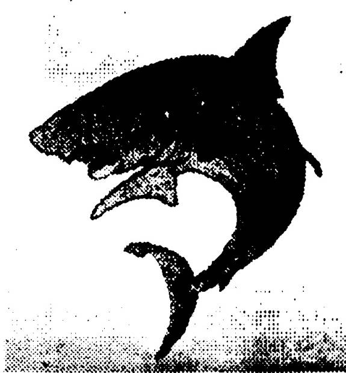
Chúng còn rất tò mò, có việc gì xảy ra trên biển là chúng tới ngay để “tìm hiểu”. Có khi chúng bơi sát tới gần và cọ vào vật lạ (da cá mập rất nhám, có thể gây thương tích) hoặc ngoạm nhẹ để thăm dò, nếu các bạn bị chảy máu là coi như là một miếng mồi ngon của nó. Cá mập còn tấn công con mồi theo mùi nước tiểu hay những động vật có cử động không bình thường
Nguyên nhân chủ yếu cá mập tấn công người không phải chỉ do đói mà còn do bị kích động như ngửi thấy mùi máu tanh, mùi thức ăn ném xuống biển, nghe những tiếng va chạm của tàu thuyền, tiếng nổ…
Phòng chống cá mập:
° Những người bị thương chảy máu không được xuống nước.
° Không ném những vật có máu hay có mùi máu xuống biển vì như thế sẽ thu hút cá mập đến.
° Không bỏ rủ tay chân xuống nước ở hai bên mạn xuồng, vì cá mập có thể tấn công bất ngờ.
° Không cởi bỏ áo quần khi ở trong vùng có cá mập, đề phòng lớp da thô ráp của cá mập cọ phải làm bị thương chảy máu
° Cởi bỏ những vật lấp lánh và phát sáng như đồng hồ, dây chuyền, huy chương, chìa khóa
° Bơi nhè nhẹ, mềm mại, uyển chuyển, tránh những động tác mạnh bạo làm kích động cá mập
° Khi thấy cá mập lượn vòng thì thường đó là dấu hiệu chuẩn bị tấn công, phải nhanh chóng lên thuyền hay lên bờ ngay
°Cá mập thường tấn công vào thời điểm các bạn rời khỏi mặt nước (lúc người còn nửa trên nửa dưới). Vì vậy, các bạn cần nắm chắc thời cơ, khi thấy cá mập sẽ tấn công không kịp thì lập tức lên xuồng hay lên bờ ngay.
° Nếu thấy cá mập bơi về hướng mình thì không được hoảng sợ bơi tháo chạy (chắc chắn các bạn không thể nào bơi nhanh bằng cá mập) làm như thế chỉ kích thích tính hung hãn của cá mập mà thôi. Nên bình tĩnh tìm cách đối phó như dùng súng bắn (nếu có) dao đâm, gậy chọc... Nếu tay không thì dùng nắm tay đấm thẳng véo mũi cá mập hay duỗi thẳng hai ngón tay chọc mạnh vào mắt nó. Tiếng thét lớn và mạnh cũng làm cho cá mập hoảng sợ bỏ chạy.
° Sau hết, các bạn không nên đi bơi ở những vùng biển sâu, vùng biển có cửa sông, nhất là thời gian từ chập tối đến rạng sáng.
CÁ PIRANHA:
Những con ác quỷ này có gần 60 loài, tất cả đều thuộc họ Serrasalmidac. Loại lớn nhất có thể dài đến 60 cm nặng 10 kg, loại nhỏ 10 cm, có nhiều màu khác nhau. Cá Piranha sống ở sông, hồ, ao, đầm lầy... vùng Nam Mỹ, từ Venezuela cho đến Bắc Brazil.
Đây là một loại cá cực kỳ hung dữ, ăn tạp, sống thành bầy đàn, nhanh nhẹn, tinh khôn, có hàm răng rất khỏe và sắc nhu dao để xé thịt.
Kích thước của con mồi không có ý nghĩa gì với chúng, nhất là khi con mồi (người hay vật) đang bị chảy máu. Với một con mồi nặng khoảng 10kg chỉ sau 5 phút là con trơ lại bộ xương. Ngay cả khi đã bị bắt, cá Piranha vẫn còn có thể cắn người. Vì vậy, không nên lội qua những nơi có cá piranha, nhất là khi đang bị thương, có máu chảy. Cũng may mà ở Việt Nam không có loại cá này.
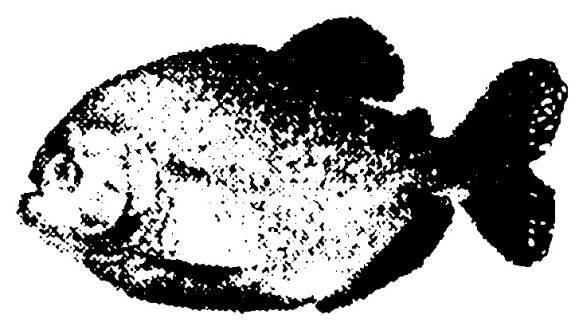
CÁ ĐIỆN
Có khoảng 50 loại cá phát ra điện để săn mồi và tự vệ, những con cá này được gọi là cá điện.
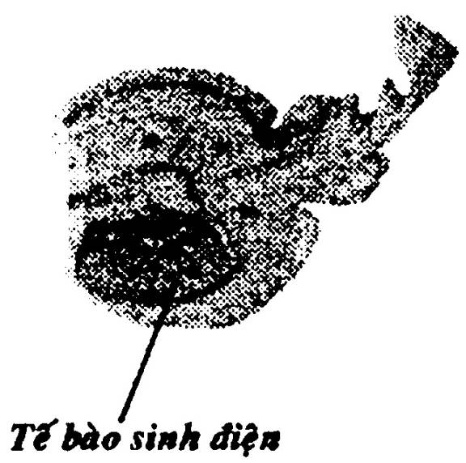
Các ngư dân ở nước ta rất sợ một loài cá đuối đặc biệt: cá đuối điện (Torpedo= Cá thụt) Khi đã câu lên thuyền rồi nếu lỡ chạm phải là bị giật cho té ngửa. Người ta đo được điện thế loài cá này là 360V
Cá chình điện ở Nam Mỹ có thể mang điện thế đến 600V, sống ở sông Ampazon và sông Orinoco, cá chình điện có thể dài hơn 2m và nặng khoảng 20 kg
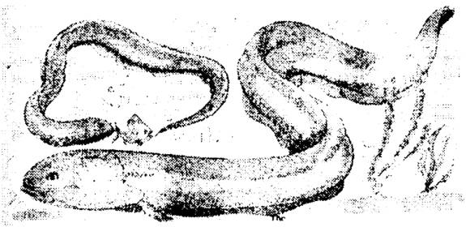
Cá trê điện dài gần 1m, được tìm thấy ở những vùng nước ngọt Châu Phi. Loài cá này gây những cú sốc điện mạnh gần bằng cá chình điện.
Loài cá điện nhỏ gọi là cá “trừng sao” không dài hơn 30 cm, thường vùi mình trong cát để phục kích các con vật nhỏ. Khi đụng đến nó, sẽ bị giật làm cho tê liệt và dễ dàng biến thành mồi cho nó.
CÁC LOẠI CÁ CÓ GAI ĐỘC
Một số loài cá mang trên mình gai độc để tự vệ, những loài cá này các bạn có thể ăn thịt, nhưng khi đánh bắt thì phải thận trọng, điển hình cho loài này là
Cá đuối gai:
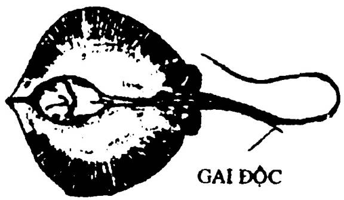
Loài cá có một hay hai cái gai nằm ở đuôi, gần cuối cơ thể, đầu gai có những tuyến chứa.
Cá thường ẩn mình dưới cát rất khó thấy, khi bị khiêu khích hay vô tình dẫm phải, nó sẽ quất mạnh đuôi vào đối thủ, gây đau đớn, nhức nhối và tê liệt cho kẻ thù
Cá ngát:
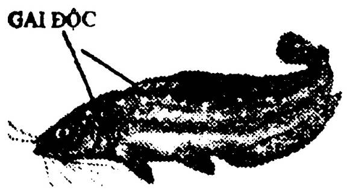
Có hình dáng giống như cá trê nhưng to lớn hơn. Được trang bị những cái gai sắc nhọn hai bên hông và trên lưng. Nếu các bạn bị các loại cá này đâm phải, thì sẽ bị nhức nhối vô cùng.
Cá mâu (mặt quỷ), cá đá:
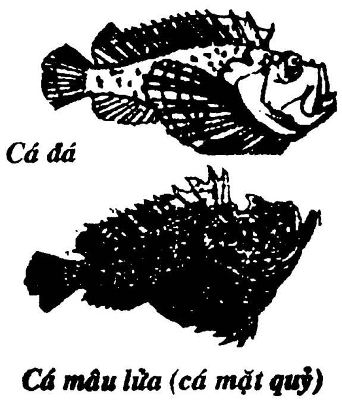
Sống ở vùng biển Đông Nam Á và châu Đại Dương, thường ẩn mình trong các hốc đá và bụi rong. Không có vảy, nhưng cơ thể chúng được bao bọc bằng những gai sắc nhọn có chứa nọc độc. Nọc độc của các loại cá này (nhất là cá mâu lửa) có thể gây hoại thư, thậm chí có trường hợp chết người
Cá rồng biển:
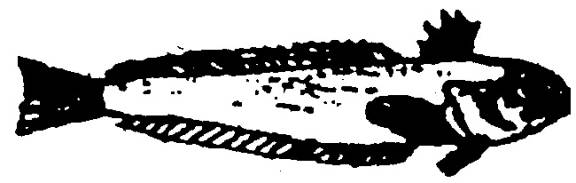
Thường sống ở các vùng biển châu Âu, thịt ngon nhưng có nọc độc ở gai nắp mang và vây trên lưng. Khi bị chích thì rất đau buốt và có thể làm chết người
Theo kinh nghiệm của ngư dân, khi bị cá rồng đâm vào, thì lập tức xoa vết thương lên cát hay bôi mỡ hoậc cấp cứu như khi bị rắn cắn.
Cá dày (Scorpena):
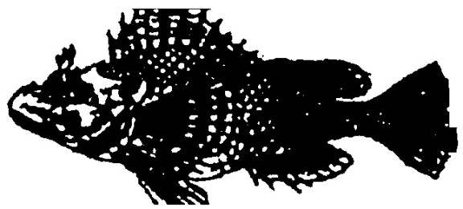
Loài cá này cũng chứa nọc độc trong các vây khiến cho vết thương rất đau buốt.
Ngoài ra, chúng ta còn gặp ở Việt Nam những loài cá quen thuộc có gai độc như: cá trê, cá úc, cá chốt, cá ngát sọc, cá nâu, cá rìa, cá vượt... và một số cá có mặt ở một số vùng trên thế giới như: cá monk, cá surgeon, cá zebra, cá weever, cá thom...
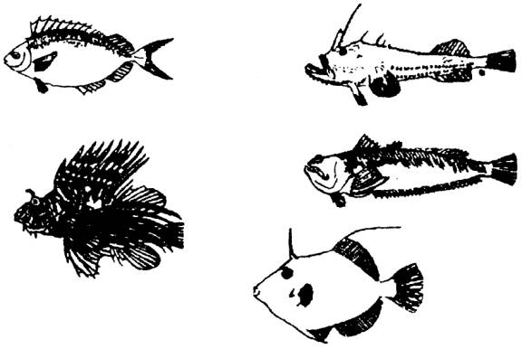
CÁC LOÀI CÁ CÓ CHẤT ĐỘC
Cá nóc:
Hiện nay, người ta đã thống kê được khoảng 60 loài cá nóc, phân nửa trong số này có chứa độc tố bên trong. Ở nước ta có khoảng 20 loài cá nóc, một số loài sống ở nước ngọt như: cá nóc Mít, cá nóc Vàng... Nhưng phần nhiều là cá nóc sống nước mặn như: cá nóc Hòm (Hùm), cá nóc nhím, cá nóc Mú, cá nóc Gáo, cá nóc Tàn Nhan, cá nóc Rằn, cá nóc Phi (Trương Phi), cá nóc Thu... Trong số đó có 2 loài cực độc, ngư dân không dám đụng đến là cá nóc Phi và cá nóc Thu. Số còn lại, nếu biết cách làm và nấu, có thể ăn được.
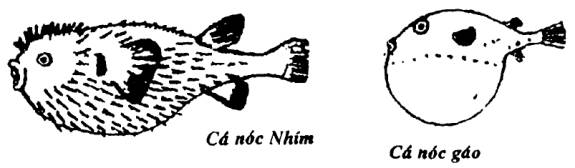
Cá nóc là loài có mình tròn, thân ngắn, có nhiều gai, không cá vảy hay vảy kém phát triển, mắt lồi, miệng nhỏ có răng gắn với nhau thành tấm lưng màu nâu hoặc xanh hay vàng tùy theo loại cá, bụng trắng. Đặc biệt khi gặp nguy hiểm thì ngậm hơi và phình bụng to ra như quả bóng. Trong mình cá nóc mang những chất cực độc như là terrodotoxin, ciguatoxin, ciguaterin... tập trung chủ yếu ở gan, ruột, và cơ bụng, nhất là từ tháng Hai đến tháng Bảy là mùa sinh sản.
Mặc dù một vài loại cá nóc là đặc sản (cá nóc Nhím, cá nóc Mú, cá nóc Hòm... ) thịt ăn rất ngon. Nhưng nếu các bạn không phải là tay chuyên nghiệp thì nên tránh xa, cho dù nó có thơm ngon và hấp dẫn đến đâu đi nữa.
Khi bị trúng độc cá nóc, trước tiên, thấy tê lưỡi và môi, rân rang đầu ngón, tay ngón chân như kiến bò, tiếp theo là nôn mửa, nhức đầu choáng váng, khó chịu ở trán và tròng mắt, đồng từ giãn, da tím, thân nhiệt và huyết áp hạ. Sau 2 giờ, nếu không cứu chữa, toàn thân sẽ bị tê liệt, lạc giọng, hàm cứng (nhưng vẫn tỉnh táo) chỉ trước khi chết mới bất tỉnh, liệt hô hấp rồi chết (tỷ lệ tử vong 60%). Nói chung, nếu sau 24 giờ mà vẫn còn sống thì có cơ may cứu thoát.
Theo kinh nghiệm dân gian, độc cá nóc có thể giải bằng nước dừa, nước quả trám, nước rễ rau muống. Nướng trái bông vải rồi sắc uống. Đắp muối toàn thân chỉ chùa mắt mũi. Cho uống than hoạt tính hay dùng 2 muỗng canh tro thực vật pha trong 1 lít nước để lắng rồi cho uống. Nhưng cũng còn tùy theo nhiễm độc nặng hay nhẹ.
Các loại cá khác:
Khi khảo cứu về độc tố của các sinh vật biển, nhiều nhà sinh vật học rất bối rối. Có nhiều loại cá chưa bao giờ nghe nói ăn mà bị trúng độc, thế mà lại có thể gây họa. Một số có độc ở vùng này nhưng không độc ở vùng khác, một số chỉ gây độc vài ba tháng trong năm
Cá chình:
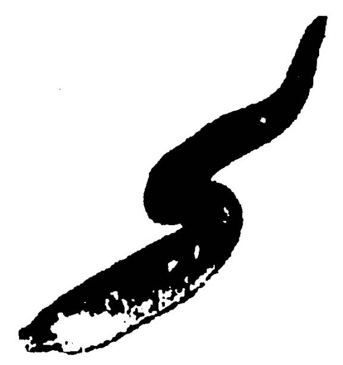
Ở vùng biển Hắc Hải, đã có hàng ngàn người chết vì cá chình biển, trong khi ở Đông Nam Á là một món đặc sản. Nhiều nghiên cứu cho thấy chất độc nằm trong máu, có lẽ do cá ăn những sinh vật mang trong mình nhiều độc tố ở trong vùng sinh trưởng của nó. Đây cũng là một loại cá dữ, hay cắn người.
Cá lịch (maraelae):
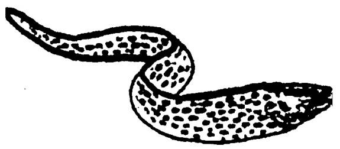
là một loài tương tợ như cá chình, sống ở Địa Trung Hải, Đại Tây Dương và Ấn Độ Dương, thịt rất ngon nhưng máu rất độc.
Độc chất đôi khi còn thấy hiện diện trong máu của các loài cá miệng tròn, cá tinca, cá chép, cá ngừ, cá đuối điện...
Một số loài cá cũng chứa chất độc trong trứng như cá Cung (schizothorax) cá Dưa Chuột (diptychus)... có thịt lành và có giá trị kinh tế ở vùng Trung Á, nhưng trứng của nó rất độc, cho nên trước khi chế biến, phải bỏ hết nội tạng.
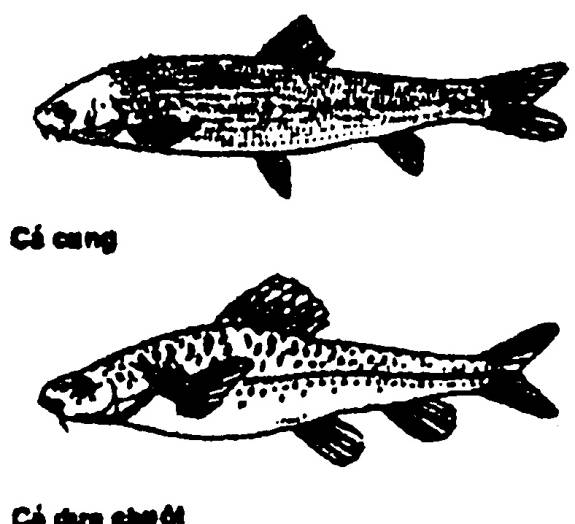
Ngay cả loài cá nhồng (barracudas) mà chúng ta vẫn thường ăn, nhưng vẫn có nhiều người bị trúng độc, tê miệng, ngứa môi phải đi bệnh viện
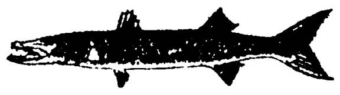
ỐC ĐỘC
Loài ốc sên biển hình nón (contesnail) có vân cẩm thạch nhìn rất đẹp, nhưng xin chớ lầm, nếu giẫm phải chúng, sẽ bị tiêm những ngòi nọc, độc không thua nọc rắn hổ, rất đau đớn và có thể chết người
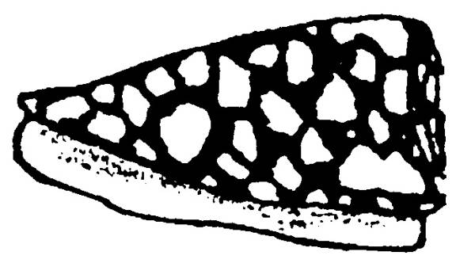
SAM ĐỘC
Loài Sam (còn gọi là cua móng ngựa) thường sống ở vùng cát pha bùn ven bờ biển, có thịt và trứng ăn rất ngon, nhưng các bạn phải cẩn thận với những con Sam bắt được ở vùng nước lợ (ngư dân gọi là Sam lông hay con So) có kích thước nhỏ hơn, mình nhiều lông, đuôi tròn (thay vì tam giác như Sam thường) đi lẻ (không bắt cặp), thịt rất độc, chết người, không thể ăn được. Ngoài ra, nếu các bạn bắt được những con cua mà thấy hơi dị dạng, bẻ que ra mà thấy có chất lỏng như mủ thì đừng ăn
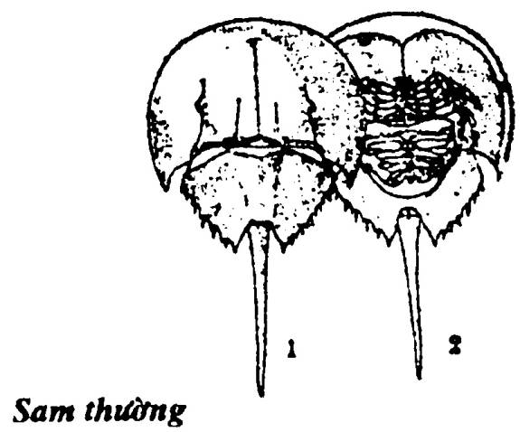
SỨA, THỦY CẨU
Sứa: Là một sinh vật gần như trong suốt, có thân hình như một cái dù, màu trắng, xanh lơ hay hồng, có hay không có điểm những chấm màu nâu, đỏ. Các loại sứa thường thấy ven biển nước ta là sứa Rô, sứa Sen, sứa Lửa...
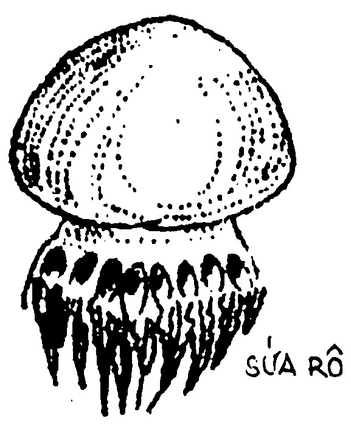
Là một loại thực phẩm khá phổ biến của ngư dân, nhưng nếu bạn bị nó chích khi đang bơi lội thì rất đau đớn như bỏng rát, có thể bị liệt cơ, nên rất nguy hiểm. Nhưng nguy hiểm nhất là các loài sứa sau đây:
Thủy cầu và sứa Hộp:
Thủy cầu có tên khoa học là Physalia phisalis. Là một sinh vật trông giống như sứa nhưng có những cánh tay rất dài và mềm, lòng thòng chìm sâu trong nước. Trên mỗi cánh tay có nhiều hấp khẩu chứa đầy chất độc nguy hiểm hơn nọc rắn.
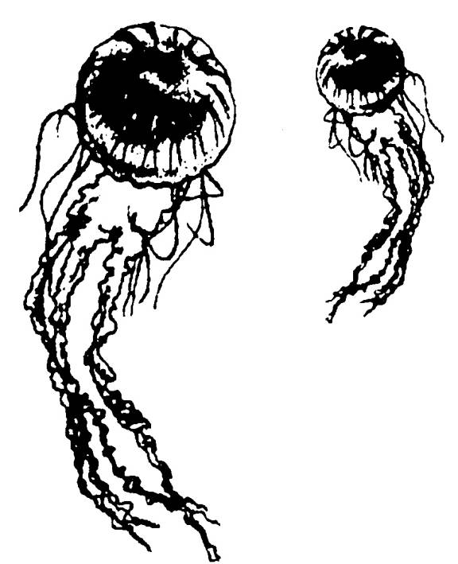
Do tác động với lân tinh trong nước biển, chúng phát ra muôn ngàn màu sắc rực rỡ. Trước đây, một đòan thủy thủ Anh đang tuần tra ven biển Bồ Đào Nha, trông thấy một khối ánh sáng lấp lánh đủ màu, họ cho đấy là chiến thuyền của Bồ Đào Nha nên đánh tín hiệu chào nhưng không thấy trả lời. Sau đó, họ khám phá ra đấy chỉ là một đàn thủy cầu. Từ đó người ta quen gọi nó là “Chiến thuyền Bồ Đào Nha” (PORTUGUESE MAN OF WAR) mà quên hẳn tên nó là Thủy cầu hay Physalia physalis.
Thủy cầu thường trôi nổi bềnh bồng trên dòng Gulf Stream, Bắc biển Caribe đến Nova Scotia, nó còn lảng vảng trên Thái Bình Dương và Đại Tây Dương. Những tay bơi lội ngoài biển mà gặp phài thủy cầu thì kể như khó mà sống sót. Vì thế người ta còn gọi nó là TỬ THẦN CỦA BIỂN.
Sứa hộp (Chironex Fleckeri):
Tên sát nhân của biển này đã có một danh sách nạn nhân khá dài, phần lớn là trẻ em ở ven biển Bắc Úc, nó còn có họ hàng ở Châu Phi, Trung Mỹ... Nó đã thoát khỏi sự nhận diện của các nhà khoa học cho mãi đến năm 1956. Một con sứa hộp có khoảng 60 xúc tu trông như một mớ dây hỗn độn, trong đó chứa hàng tỷ túi chất độc hơn cả rắn hổ mang, đủ sức giết chết 20 người đàn ông khỏe mạnh. Nếu xúc tu của chúng tiếp xúc đúng mức, nạn nhân sẽ chết sau 2-3 phút
Khi bị tiếp xúc với sứa hộp mà còn sống sót, thì người ta dội dấm lên mình của nạn nhân để cấp cứu.
Những nguy hiểm khác:
Khi bơi lặn ở dưới nước, ngoài các động nguy hiểm như đã kể trên, các bạn còn có thể gặp một số sinh vật có thể gây thương tích thậm chí nguy đến tính mạng của các bạn như:
Hàu Đá:
Bám rất chắc vào những tảng đá ven biển, có cạnh rất sắc bén. Nếu các bạn trượt chân té trên những tảng đá có hàu bám, chắc chắn sẽ có những vết thương nhớ đời
Ốc đinh, ốc kèn:
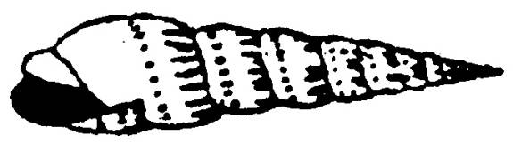
Có thể luộc ăn được, nhưng nếu giẫm lên nó là thủng chân, vì đít của nó rất nhọn.
Cầu gai hay nhím biển:
Thường gặp ở rìa đá ngầm vành đai san hô... có gai dài và nhọn mang chất độc gây lở loét.
Sò nón khổng lồ:
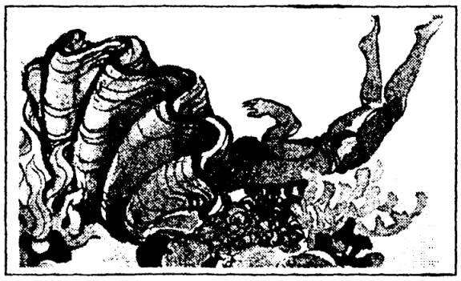
Có nhiều ở quần đảo Trường Sa, Hoàng Sa của nước ta và vành đai san hô nước Úc... Đây là một loài sò khổng lồ, có khi to hơn cái nón lá, thịt ăn được. Nhưng nếu bạn cho tay vào hay vô tình giẫm chân vào là nó kẹp dính bạn cho đến lúc bạn chết đuối. Nếu muốn lấy tthịt nó, trước hết các bạn phải chêm hai mảnh vỏ lại bằng cây hay đá
Nhện độc:
Trong các loài côn trùng độc, có lẽ nhện là con vật mang mầm độc cao nhất. Có những con nhện chỉ với một vết cắn bé tí xíu, với một chấm chất độc bằng đầu kim, đủ để giết chết một con người. Tuy nhiên, trong số 40.000 loại nhện khác nhau, chì có độ 100 loại với nọc độc có khả năng gây khó chịu cho con người, nhưng chỉ có khoảng 10 loại là thật sự nguy hiểm.
Tiêu biểu nhất là “góa phụ đen” (Black Widow). Đây không phải là loại nhện độc nhất, nhưng nó đông đúc và phổ biến ở vùng Châu Mỹ. Chỉ có nhện cái mới đe dọa con người. Ảnh hưởng của vết cắn đến sau 1-2 giờ. Nạn nhân co giật liên hồi và bị ngẹt thở, có khi nạn nhân hoảng loạn thần kinh la hét sợ hãi, cho dù nọc của nó hiếm khi làm chết người nhưng nó vẫn rất nổi tiếng.
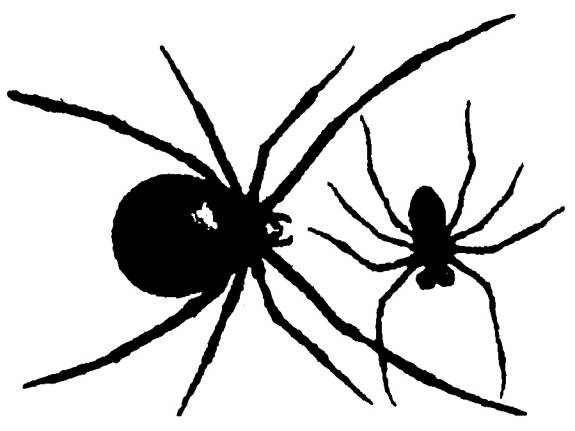
Ở Châu Mỹ còn có một loại nhện độc cũng khá đông đúc nữa đó là nhện nâu (Brown Recluse) có nọc độc như “goá phụ đen” và còn gây hoại thư.
Tuy nhiên, hai loài nhện trên cũng còn thua xa loài nhện Funnel- Web ở Sydney nước Úc cả về nọc độc lẫn tính hung hăng của nó
Với bộ nanh dài gần 1 cm, loài nhện cực độc này tấn công mọi sinh vật mà nó gặp trên đường đi.
Chỉ vài phút sau khi bị cắn, chất độc sẽ tác dụng lên cơ của nạn nhân, khiến lưỡi bị co thắt, dớt dãi chảy lòng thòng, nạn nhân nôn mửa, toát mồ hôi, khó thở, huyết áp tăng, các bắp thịt quằn quại như thể có đàn rắn nằm dưới da. Với một vết cắn của Funnel- Web, có thể giết chết một em bé sau vài giờ hoặc một người lớn sau vài ngày.
Ở nước Úc, còn có những loài nhện cực độc khác như (Phoneutia fera) có nguồn gốc từ Nam Mỹ. Loài Atrax robustus cũng là một trong số 37 loài Funnel Web cực độc... Ngoài ra, chúng ta cũng phải kể thêm loài nhện Loxosceles ở châu Mỹ, loài Tarantula ở rừng Amazon, tuy ít độc hơn các loài trên, nhưng không kém phần nguy hiểm.
Con rết (rít, ngô công):
Cơ thể của rết thường là nhỏ, nhưng cũng có con dài tới 25 cm. Thân dẹt, bao gồm khoảng 20 đốt, mỗi đốt mang một đôi chân. Đầu ngắn, miệng nằm giữa hai hàm trên. Đôi chân thứ nhất biến thành răng hàm có móc chứa nọc độc
Rết thường ẩn núp dưới các tảng đá, thân cây, lá cây, vỏ cây mục, cỏ khô, rác ẩm... Chúng hoạt động chủ yếu về đêm.
Khi bị rết cắn, tuy không làm chết người, nhưng sưng nhức và đau đớn, có thể gây sốt, khó chịu vô cùng. Các bạn hãy dùng một trong những phương pháp sau đây:
- Bôi vôi hạt quất (tắc, kim quít) đắp vào vết cắn.
- Lấy lá bạc hà, húng chanh, rau sam. Giã đắp vào vết cắn.
- Nhai nhỏ một tép tỏi, đắp vào chỗ cắn. Đưa chỗ bị cắn vào gần ngọn đèn hay lửa cho thật nóng (không để bị phỏng) để yên vài phút, sẽ giảm đau ngay.
- Bắt một con nhện nhà (tri thù) còn sống, để vào chỗ bị cắn; nó sẽ hút hết nọc.
Bọ cạp:
Ở Việt Nam, chúng ta thường gặp 2 loại bọ cạp là: bọ cạp núi và bọ cạp củi.
Bọ cạp núi:
Là loại lớn, dài khoảng 12cm, mình màu xanh, đen bóng. Thường gặp ở rừng núi, hải đảo, đất hoang... Tuy to lớn nhưng chích không đau nhức bằng bọ cạp củi.
Bọ cạp củi:
Là loại nhỏ chỉ dài từ 5-6 cm có màu nâu xám (giống màu vỏ cây). Thường ẩn mình dưới các tảng đá, đống cây, hốc cây, khe núi... và cũng hay chui vào các đống áo quần, giày dép... Loài bò cạp này chích rất đau nhức, nhất là khi nó đang có chửa.
Điều trị bọ cạp chích cũng giống như khi bị rết cắn.
Ong đốt:
Thông thường thì loài ong ít khi tấn công người, trừ khi chọc phá hay bị khiêu khích. Khi ong bay đến gần chúng ta, không nên dùng tay xua đuổi, vì như thế chúng cho là tấn công. mà nên bình tĩnh, không phản ứng bằng hành động, tự nó sẽ bay đi.
Các loài ong có ngòi độc thường gặp ở Việt Nam và một số nước trên thế giới là: ong đen, ong vàng, ong lá, ong mật, ong khoái, ong ruồi, ong sắt, ong bầu, ong vò vẽ, ong bắp cày, ong ngựa, ong đất, tò vò... Mội loài đều có nọc độc cũng như tập tính khác nhau. Thí dụ:
Ong bầu:
là loại ong có vết đốt gây nguy hiểm nhất trong các loài ong vì nó chứa một lượng lớn nọc độc và vòi chích của nó rất dài, có thể xuyên thẳng đến mạch máu.
Ong vò vẽ:
loại ong này khá dữ tợn, vết đốt rất đau nhức và nó có thể đốt nhiều lần vì kim chích của nó không bị dính lại ở da kẻ bị đốt
Ong khoái:
là một trong các loại ong mật, rất phổ biến y trong các cánh rừng tràm ở miền Tây Nam Bộ. Có cơ thể to hơn các loài ong mật khác và cũng dữ tợn hơn. Vòi chích của nó dính lại ở da người bị đốt, cho nên sau khi đốt, nó sẽ chết.
Ong đốt tuy rất đau nhức, nhưng không nguy hiểm đến tính mạng, trừ khi bị đốt một lúc từ 50 con trở lên hoặc cơ thể người đó bị dị ứng với nọc độc.
Khi bị ong đốt, nếu thấy ong để ngòi nọc lại, thì phải nhổ ra, sau đó hãy dùng một trong những phương pháp sau:
- Bôi vôi (ăn trầu) hay kem đánh răng vào chỗ bị đốt
- Tán nhỏ Aspirin rắc lên nơi bị đốt, sẽ giảm đau.
- Dùng hành tươi hay nửa trái chanh chà lên chỗ bị đốt
- Dùng ammoniac hoặc dấm bôi lên chỗ bị đốt.
- Đập chết con ong, xé xác đắp lên chỗ bị đốt
Ve cắn:
Ve nầy không phải là ve sầu kêu trong mùa hè mà là một loại côn trùng rất nhỏ, có nhiều ở vùng nhiệt đới và á nhiệt đới, cùng loại với bọ chó ở nhà. Bình thường, chỉ bằng đầu cây tăm, khi hút no máu thì phình lên bằng đầu chiếc đũa, đầu giả có gai, khi cắn vào người hay thú để hút máu, gai giương lên bám chặt vào cơ thể nạn nhân.
Khi bị ve cắn, nếu các bạn cầm con ve kéo ra ngày thì đầu giả sẽ đứt dính trở lại trong da thịt, gây nóng sốt và làm ngứa ngáy cả năm mới hết. Muốn tránh điều đó, các bạn nên dùng đầu que nhang, que diêm, điếu thuốc đang cháy, chạm vào đít của nó rồi từ từ mới lôi ra để giết, sau đó bôi vôi lên vết cắn.
Muỗi:
Chúng ta có thể gặp muỗi bất cứ ở nơi nào trên thế giới. Là một giống côn trùng bé nhỏ mà nguy hiểm của nó không do vết đốt gây ngứa ngáy khó chịu mà do những căn bệnh chết người mà nó truyền cho con người như: sốt rét ngã nước, sốt vàng da, sốt xuất huyết... mà chúng ta không còn lạ gì. Bệnh sốt rét do muỗi Anophele truyền sang người khi đốt. Bệnh sốt da vàng do muỗi Acdes. Bệnh sốt xuất huyết do loài muỗi vằn...
Các bạn nên tìm mọi cách để tránh không bị muỗi cắn bằng các cách sau:
- Làm chỗ trú ẩn nơi cao ráo
- Ngủ trong mùng nếu có thể
- Đốt lửa hun khói bằng những cây có tinh dầu
- Trát bùn lên cơ thể, những nơi không có áo quần che chở.
- Mặc cả áo quần, giày vớ, găng tay, nếu có thể được.
- Ngâm mình trong bùn không những có thể chống được muỗi mà còn tránh được thú dữ, côn trùng, rắn rết...
- Thoa thuốc chóng muỗi (insect repellent) nếu có
Các loài côn trùng khác:
Các bạn còn có thể gặp một số côn trùng khác ở những nơi hoang dã như: Ruồi trâu (mòng) cắn rất đau. Ruồi Tse Tse (ở Nam Phi Châu): gây bệnh ngủ dẫn đến chết người. Ruồi rừng (có nhiều ở Việt Nam): đẻ ấu trùng (giòi) vào các vết thương, gây lở lói, nhiễm trùng.. và rất nhiều côn trùng khác mà chúng tôi không thể kể hết